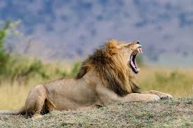
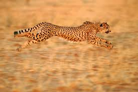
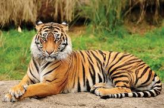
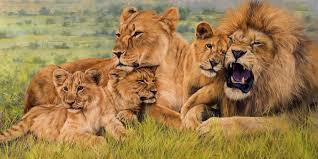
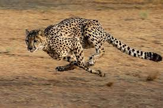
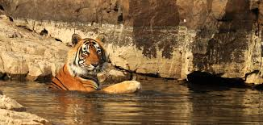

Tiko, Cici, and Leo were inspired by real animals that live in jungles and grasslands around the world. Explore the gallery below to see the amazing wildlife behind the story.

A lion’s roar can be heard up to five miles away.

Cheetahs are the fastest land animals.

Tigers are the largest wild cats in the world.

Lions live in groups called prides.

Cheetahs use their long tails to help them balance while running at high speeds.

Tigers are strong swimmers and often cool off in rivers and lakes.